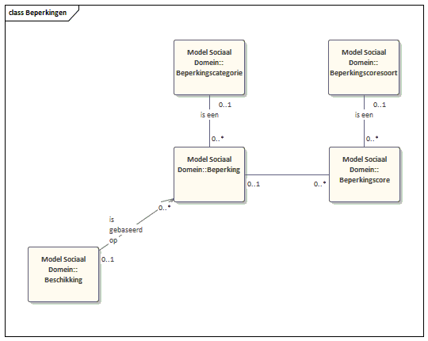

Gegevensdefinities Wmo en Jeugd
Aangezien de gegevensdefinities van Wmo en de jeugdwet sterk op elkaar lijken wordt uitgegaan van een generiek gegevensmodel waar zowel in het kader van de jeugdwet als in het kader van de Wmo vanuit wordt gegaan. Het gegevensmodel voor Wmo en Jeugd is net als de andere modellen binnen het sociaal domein opgebouwd rond het objecttype ‘Client’.
In de volgende figuur is dit generieke gegevensmodel uitgewerkt. Er wordt onderscheid gemaakt in de van toepassing zijnde wet via het attribuut wet, deze is in de volgende entiteiten opgenomen: Beschikking, Voorziening, Toewijzing, Voorzieningssoort, Voorzieningscategorie, Prijs, Leveringsvorm, Beperking, Beperkingsscore, Beperkingssoort en Beperkingsscoresoort.

In de ‘Beschikking’ samen met de daaraan gekoppelde ‘Beschikte Voorzieningen’ geeft de gemeente aan van welke voorzieningen de client gebruik kan maken. Via de Toewijzing wordt de beschikte zorg toegewezen aan een ‘Leverancier’, die op basis van die ‘Toewijzing’ doet de leverancier ‘Leveringen’, en dient hij ‘Declaraties’ in. ‘Beschikte Voorzieningen’ zijn van een bepaalde ‘Voorziening’ (zoals hulp en de huishouding, een scootmobiel of een woningaanpassing), waarover met de ‘Leverancier’ prijsafspraken worden gemaakt, welke in ‘Tarief’ zijn terug te vinden. De gemeente stuurt een ‘Melding Eigenbijdrage’ aan het CAK, zodat het CAK de maandelijkse eigen bijdrage gaat innen. Dit is gebaseerd op het systeem wat vanaf 2019 is ingevoerd waar een vierwekelijkse eigen bijdrage verschuldigd is van maximaal €17,50 per maand in 2019 (wordt €19,00), dus geen eigen bijdrage gekoppeld aan de voorziening meer.
Een ‘Beschikte Voorziening’ heeft een bepaalde leveringsvorm: ZIN (Zorg in Natura) of PGB (PersoonsGebonden Budget). Als de zorg wordt geleverd in de vorm van een PGB, dan krijgt de Client een budget (opgenomen in de entiteit ‘Beschikte Voorziening’: eenheid in Euro’s). Voor de afhandeling stuurt de gemeente een TBK-bericht aan het SVB voor verdere afhandeling. Deze informatie wordt opgenomen in ‘PGB-Toekenning’ waarbij periodiek een ‘Budgetuitputting’ hoort.

Een ‘Client’ kan meerdere ‘Beschikkingen’ hebben op basis van 1 of meer beperkingen die gescoord zijn met een ‘Beperkingscore’. Zowel ‘Beperking’ als de score komen voor een en referentietabel. In de ‘Wmo-beschikkingen’ worden 1 of meer voorzieningen toegekend, die voorkomen in de lijst voorzieningen die de gemeente Delft ondersteunt.
Op het moment van schrijven gebruikt Delft de beperkingen niet, omdat ze wel formeel onderdeel uitmaken van de onderliggende standaarden zijn de definities wel opgenomen.
Het domeinmodel voor de Wmo en de Jeugdwet bouwt voort op het generieke datamodel van het sociaal domein. Het model steunt op de gegevensdefinities uit de iWmo, iJw en iPgb waarin het berichtenverkeer tussen gemeenten en zorgaanbieders staat beschreven.